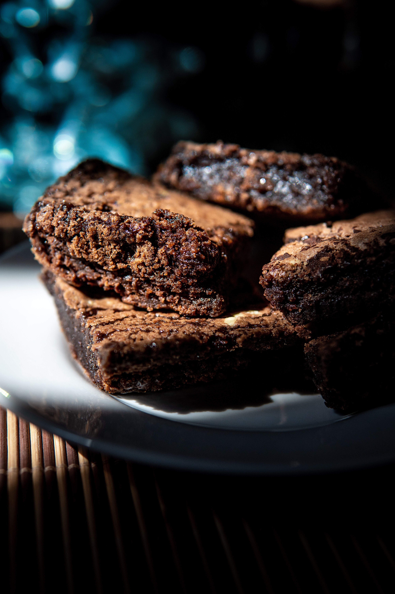
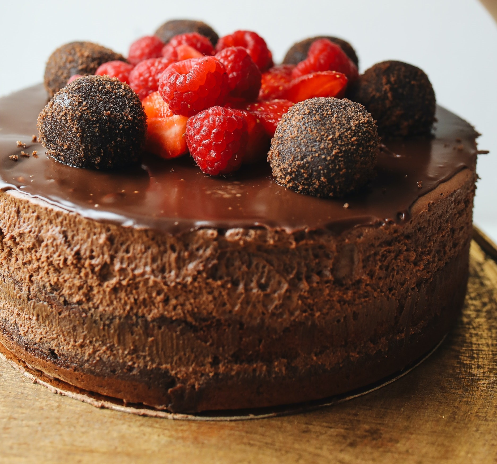
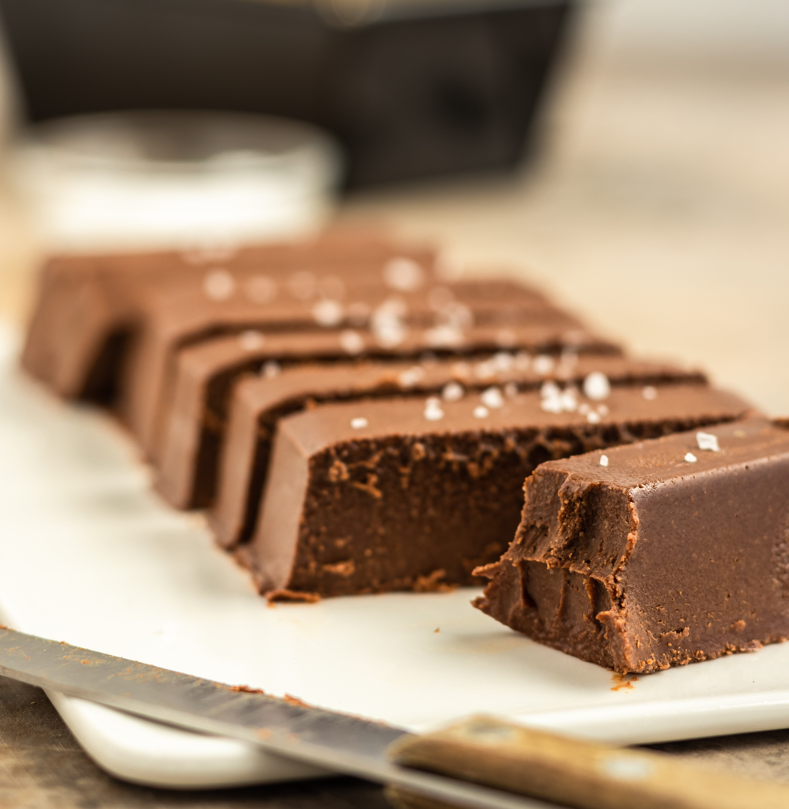
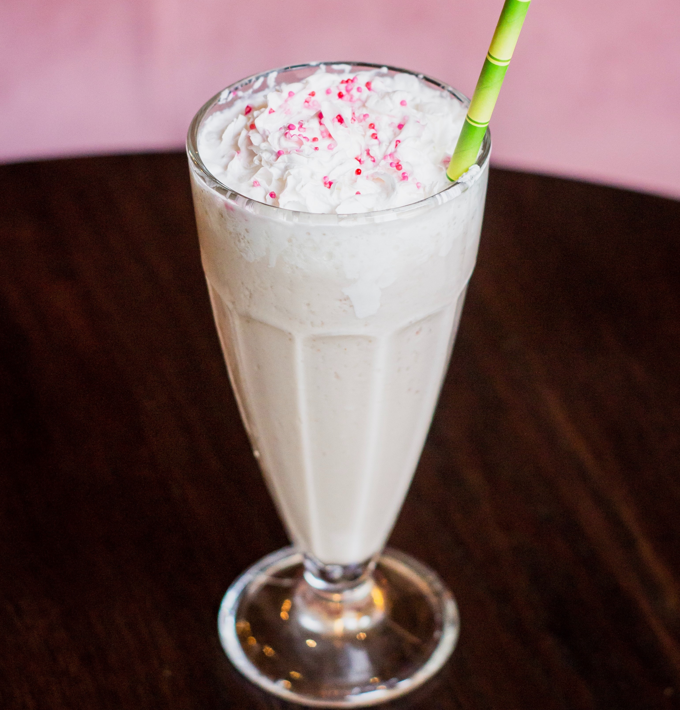
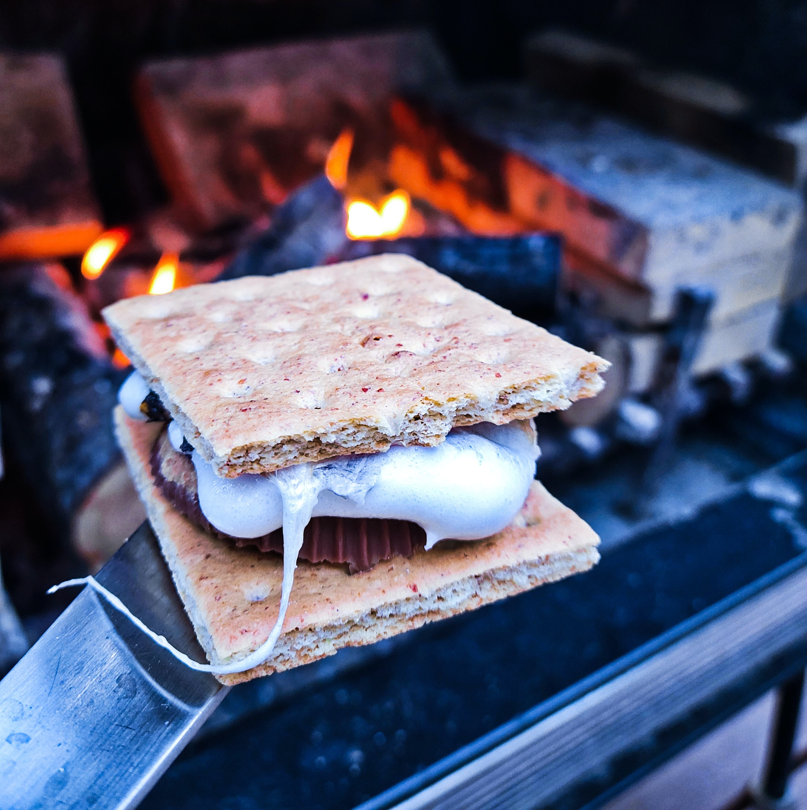

The Munchies

Brownies Ingredients:
- 2 cups white sugar
- 1 1/2 cups all-purpose flour
- 1 cup butter, melted
- 4 eggs
- 1/2 cup cocoa powder
- 1 teaspoon vanilla extract
- 1/2 teaspoon baking powder
- 1/2 teaspoon salt
- 1/2 cup walnut halves
Brownies Recipe:
- Preheat the oven to 350 degrees F (175 degrees C). Grease a 9x13-inch pan.
- Mix sugar, flour, melted butter, eggs, cocoa powder, vanilla, baking powder, and salt in a large bowl until combined. Spread the batter into the prepared pan. Decorate with walnut halves.
- Bake in the preheated oven until top is dry and edges have started to pull away from the sides of the pan, about 20 to 30 minutes; cool before slicing into squares.

Chocolate cake Ingredients:
Cake:
- 1 cup unsweetened cocoa powder
- 2 cups boiling water
- 2 3/4 cups all-purpose flour
- 2 teaspoons baking soda
- 1/2 teaspoon salt
- 1/2 teaspoon baking powder
- 2 1/2 cups white sugar
- 1 cup unsalted butter, softened
- 4 large eggs
- 1 1/2 teaspoons vanilla extract
Frosting:
- 1/3 cup unsalted butter, softened
- 2 cups confectioners' sugar
- 2 tablespoons unsweetened cocoa powder
- 1 teaspoon vanilla extract
Filling:
- 1 pint heavy whipping cream
- 1 teaspoon vanilla extract
- 1 cup confectioners' sugar
Chocolate cake Recipe:
- Start cake: Place cocoa in a medium bowl. Gently pour boiling water over top and stir to combine; let cool, about 15 minutes.
- Meanwhile, preheat the oven to 350 degrees F (175 degrees C). Grease and flour three 9-inch round cake pans.
- Sift together flour, baking soda, salt, and baking powder into a mixing bowl.
- Combine sugar and butter in a large mixing bowl; beat with an electric mixer until creamy. Add eggs, one at a time, mixing well after each addition. Stir in vanilla. Add flour mixture alternately with the cooled cocoa mixture, mixing only until combined. Pour 1/3 of the cake batter into each of the prepared pans, spreading evenly.
- Bake in the preheated oven until a toothpick inserted into the centers comes out clean and cakes pull away from the sides of the pans, 18 to 22 minutes. Remove cakes from the oven and set on a wire rack to cool for about 5 minutes. Run a table knife around the edges to loosen. Invert cakes carefully onto the wire rack and let cool completely, about 20 more minutes.
- While the cakes are cooling, make frosting and filling: Beat butter for frosting in a mixing bowl until creamy. Gradually mix in confectioners' sugar, cocoa, and vanilla; continue to mix until light and fluffy, 7 to 10 minutes. Set aside.
- Make filling: Whip heavy cream and vanilla in a bowl until cream becomes thick. Add confectioners' sugar and continue to whip until stiff but not too grainy.
- Fill and frost cake: Remove cooled cake layers from pans. Trim any top surfaces to make them flat. Place one layer on a nice plate and spread 1/3 of the filling over the top. Top with another layer and another 1/2 of the remaining filling. Place the remaining cake layer on top. Spread frosting around the sides of the layers, leaving a ridge that extends up over the top edge. Spread the remaining filling over the top of the cake, inside the ridge of frosting.

Chocolate Mousse Ingredients:
- 1 cup semi-sweet chocolate chips
- 5 tablespoons boiling water
- 4 large eggs, separated and divided
Chocolate Mousse Recipe:
- Place chocolate chips in a blender; pulse until ground. Add boiling water and blend until chocolate is melted. Add egg yolks, one at a time, blending well after each addition; transfer to a mixing bowl.
- Beat egg whites in a glass, metal, or ceramic bowl until stiff peaks form. Gently fold egg whites into chocolate mixture. Pour mousse into wine glasses or other serving glasses and chill in the refrigerator until set, 2 to 3 hours.

Cheesecake Ingredients:
- 1 (9 inch) prepared graham cracker crust
- 16 ounces cream cheese
- 2 eggs
- 3/4 cup white sugar
- 2 teaspoons vanilla extract
- 1/2 teaspoon grated lemon zest
Cheesecake Recipe:
- Preheat oven to 350 degrees F (175 degrees C).
- Beat softened cream cheese slightly. Add eggs, sugar, vanilla, and lemon zest. Beat until light and fluffy. Pour mixture into crust.
- Bake at 350 degrees F (175 degrees C) until firm, about 25 minutes. Let cheesecake cool then top with cherry or blueberry pie filling, if desired. Refrigerate for at least 8 hours before serving.

Cookies Ingredients:
- 1 cup butter, softened
- 1 cup white sugar
- 1 cup packed brown sugar
- 2 eggs
- 2 teaspoons vanilla extract
- 1 teaspoon baking soda
- 2 teaspoons hot water
- 1/2 teaspoon salt
- 3 cups all-purpose flour
- 2 cups semisweet chocolate chips
- 1 cup chopped walnuts

Fudge Ingredients:
- 3 cups semisweet chocolate chips
- 1 (14 ounce) can sweetened condensed milk
- 1/4 cup unsalted butter, cut into pieces
- 1 cup chopped walnuts (Optional)
Fudge Recipe:
- Combine chocolate chips, condensed milk, and butter in large microwave-safe bowl. Microwave on medium heat until chips are melted, 3 to 5 minutes, stirring once or twice during the cooking.
- Meanwhile, generously grease an 8-inch square glass baking dish.
- Remove chocolate mixture from the microwave and stir in nuts. Pour into the prepared dish.
- Refrigerate until fudge is set, about 2 hours.
- Cut into 16 squares.

Milkshake Ingredients:
- 2 cups vanilla ice cream
- 1 cup whole milk
- 1 teaspoon vanilla extract
Milkshake Recipe:
- Blend ice cream, milk, and vanilla extract together in a blender until smooth.
- Pour into glasses and serve.

S'mores Ingredients:
- 1 large marshmallow
- 1 graham cracker
- 1 (1.5 ounce) bar chocolate candy bar
S'mores Recipe:
- Heat marshmallow over an open flame until it begins to brown and melt.
- Break graham cracker in half; sandwich chocolate between graham cracker and hot marshmallow. Allow marshmallow to cool a little before eating.

Vanilla Cupcakes Ingredients:
- 3/4 cup superfine sugar
- 2/3 cup butter, softened
- 3 large eggs
- 1 1/2 cups self-rising flour
- 1 teaspoon vanilla extract
Vanilla Cupcakes Recipe:
- Preheat the oven to 350 degrees F (175 degrees C). Grease a 12-cup muffin tin or line cups with paper liners.
- Beat sugar and butter together in a large bowl with an electric mixer until light and fluffy. Add eggs one at a time, beating well after each addition. Beat in vanilla extract. Stir in flour just until mixed; spoon batter into the prepared muffin cups, filling each 3/4 full.
- Bake in the preheated oven until the tops spring back when lightly pressed, 18 to 20 minutes. Cool in the tin briefly before transferring to a wire rack to cool completely.